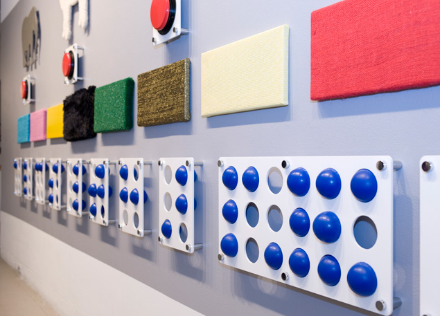

Tactile Design - Lindsey M. Muir - MFA Graphic Design Thesis 2009

My thesis installed in the Meyerhoff Gallery at the Maryland Institute College of Art.
Kristian Bjørnard spells a word in braille.

Plexiglas braille cells that teach the fundamentals of braille.
Students learn how to write in braille.
My thesis permanently installed at the Maryland State Library for the Blind and Physically Handicapped.
Textures and sound appeal to the different senses.
Black braille bumps on the chart instructs people how to correctly place each dot.
The redesigned children's area at the library. The large braille dots on the wall spell out "read braille."